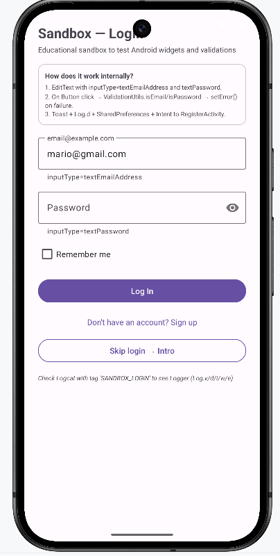
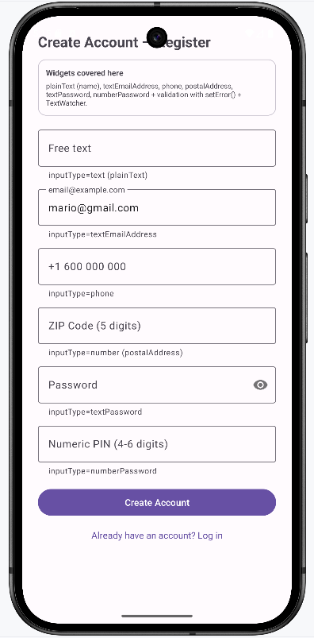

Core · Flujo Auth fake (sin backend)
Login → Registro → Intro
Auth secuencial educativo. No hay API: se valida en local y se persiste email en SharedPreferences. Lo importante es ver inputType, TextInputLayout.setError, Toast, Log e Intent extras.
MainActivity · Login
activity_main.xml · ConstraintLayout + EdgeToEdge
Login — Design + Emulador
Guarda como assets/images/auth-login.png y auth-login-preview.png

Layout — anatomía técnica
<TextInputLayout hint="@string/common_hint_email"
helperText="@string/common_helper_email">
<TextInputEditText inputType="textEmailAddress"/>
</TextInputLayout>
<TextInputLayout passwordToggleEnabled="true"
hint="@string/common_hint_pass">
<TextInputEditText inputType="textPassword"/>
</TextInputLayout>
<CheckBox text="@string/common_label_remember"/>
<MaterialButton text="@string/common_btn_login"/>
<TextView text="@string/acmain_go_register" clickable/>Card superior con acmain_card_title/desc explica el flujo en la propia UI.
Precarga y salto directo
String saved = Prefs.getUser(this);
if(!saved.isEmpty()) etEmail.setText(saved);
// Link texto → sin validar:
findViewById(R.id.tvGoRegister).setOnClickListener(v ->
startActivity(new Intent(this, RegisterActivity.class)));private void attemptLogin(){
String email = etEmail.getText()!=null? etEmail.getText().toString().trim() : "";
String pass = etPass .getText()!=null? etPass.getText().toString() : "";
tilEmail.setError(null); tilPass.setError(null);
boolean ok = true;
if(!ValidationUtils.isRequired(email)){
tilEmail.setError(getString(R.string.common_err_required)); ok=false;
} else if(!ValidationUtils.isEmail(email)){
tilEmail.setError(getString(R.string.common_err_email)); ok=false;
}
if(!ValidationUtils.isRequired(pass)) tilPass.setError(...required);
else if(!ValidationUtils.isPassword(pass)) tilPass.setError(...pass_short);
if(!ok){ Toast.makeText(this, getString(common_msg_correct_errors), SHORT).show(); return; }
Prefs.saveUser(this, email);
startActivity(new Intent(this, RegisterActivity.class).putExtra("email", email));
}Decisiones técnicas
• trim() evita " foo@bar.com ". • Orden: isRequired → isEmail/Password. • passwordToggleEnabled delega el ojito a Material. • windowSoftInputMode=adjustResize evita que teclado tape botón.
Registro — 6 campos scrolled
Guarda como assets/images/auth-register.png

RegisterActivity · 6 inputTypes
activity_register.xml · ScrollView + ConstraintLayout
Mapa inputType → teclado
| Campo | inputType |
|---|---|
| Nombre | textCapWords |
| textEmailAddress | |
| Teléfono | phone |
| Postal | number |
| Pass | textPassword |
| PIN | numberPassword |
PIN = ^\d{4,6}$ vs Pass = length≥6. Teclado numérico punteado vs alfanumérico.
Validación en dos fases
En vivo: TextWatcher limpia error si ya es válido (no bloquea).
etEmail.addTextChangedListener(new SimpleWatcher(){
void afterTextChanged(s){
if(ValidationUtils.isEmail(s.toString())) tilEmail.setError(null);
}
});Al pulsar: valida todos secuencial, setError por campo, Toast genérico + Log.e.
Paso de datos
String incoming = getIntent().getStringExtra("email");
if(incoming==null) incoming = Prefs.getUser(this);
etEmail.setText(incoming);Si viene de Login, precarga. Si el usuario vuelve atrás, Prefs asegura dato. Al validar OK → Prefs.saveUser + Intent Intro putExtra name/email.
IntroActivity · Bienvenida
activity_intro.xml · Transición didáctica
String name = getIntent().getStringExtra("name");
String email = getIntent().getStringExtra("email");
if(email==null) email = Prefs.getUser(this);
if(name==null || name.isEmpty()) name = email;
tvUser.setText(getString(R.string.common_msg_hello, name));
// placeholder ¡Hola, %1$s! → ¡Hola, Javier!
findViewById(R.id.btnGoHome).setOnClickListener(v ->
startActivity(new Intent(this, HomeActivity.class)));Card explica operación interna
Muestra en la propia UI: getStringExtra / SharedPreferences → TextView.setText → onClick → Intent Home. Puente entre auth y hub.